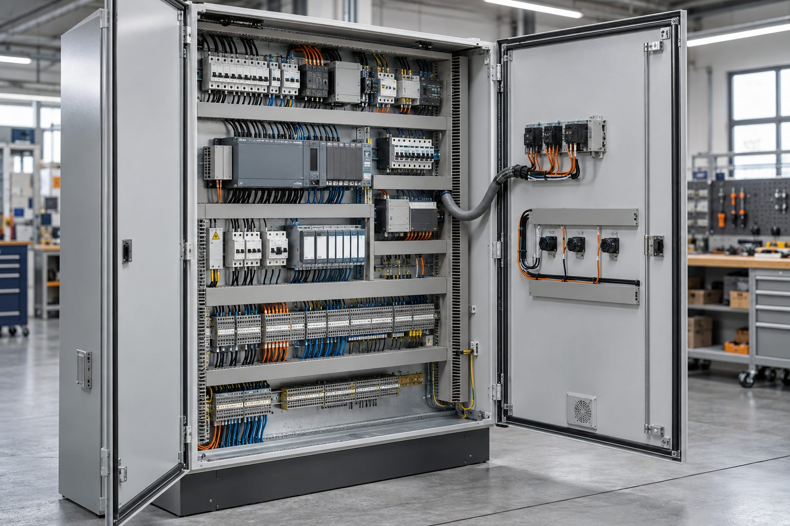
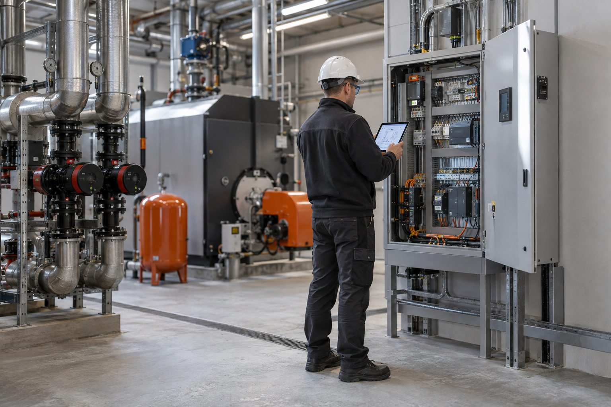
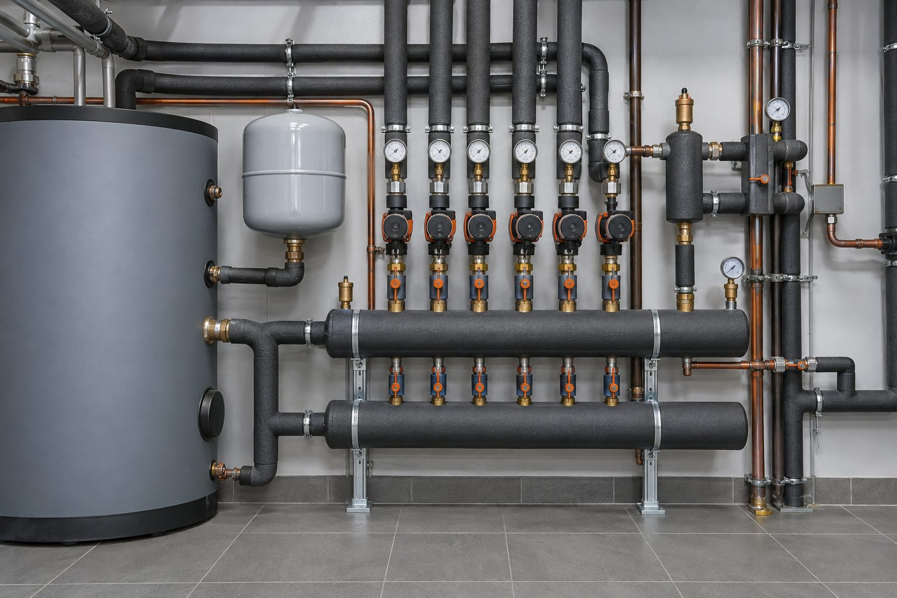

Отопление
Управление котлами, смесительными контурами, тёплыми полами и температурой помещений.
- Погодозависимое регулирование
- Контроль аварийных режимов
- Удалённое наблюдение
Контур Системы / Инжиниринг
Проектирование, сборка и запуск систем управления отоплением, вентиляцией и насосными группами.
Заданное значение: 68°C
Нагрузка системы · последние 8 часов
Инженерные решения
Состав системы определяется по исходным данным, действующей схеме и требованиям к управлению.
Управление котлами, смесительными контурами, тёплыми полами и температурой помещений.
Автоматизация приточных и вытяжных установок с контролем температуры и состояния оборудования.
Компоновка автоматики по согласованной схеме, маркировка компонентов и проверка перед отправкой.
Реализация в деталях
Демонстрационные изображения показывают типовые элементы проекта. Фактический состав оборудования зависит от объекта и технического задания.

Компоненты размещаются по схеме, цепи маркируются и проверяются до отправки на объект.

Проверка входов, исполнительных механизмов и алгоритмов в рабочих режимах.

Насосные группы, датчики и регулирующие устройства объединяются одной логикой управления.
Типовые задачи
Ниже показаны демонстрационные сценарии. Фактические параметры определяются после обследования.
Котельная, тёплые полы, радиаторы и контроль температуры по помещениям.
Дистанционный контроль между заездами и уведомления о нештатных режимах.
Управление климатом по режимам работы и наблюдение за ключевыми параметрами.
Порядок работы
Каждый следующий этап начинается после согласования результата предыдущего.
Тип объекта, перечень оборудования, фотографии, существующие схемы и требуемые режимы работы.
Готовим структурную схему, спецификацию, перечень функций, сроки и расчёт работ.
Монтируем компоненты, выполняем маркировку и тестируем алгоритмы на стенде.
Подключаем оборудование, проверяем сценарии, фиксируем параметры и передаём инструкции.
Результат работ
Настроенные режимы, проверенные датчики и исполнительные механизмы.
Схема подключения, перечень компонентов и таблица настроенных параметров.
Инструкция по основным сценариям и действиям при аварийных уведомлениях.
Частые вопросы
Предварительный расчёт возможен по фотографиям, существующей схеме, перечню оборудования и описанию требуемых функций. Итоговый состав уточняется после проверки исходных данных.
План объекта, фотографии котельной или щита, список оборудования, существующие схемы и описание режимов, которые требуется автоматизировать.
Нет. Это учебная демонстрационная версия. Она проверяет обязательные поля, но не передаёт и не сохраняет введённые данные.
Запрос расчёта
Для предварительной оценки укажите тип объекта, установленное оборудование и функции, которые требуется реализовать.